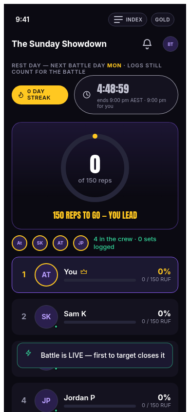
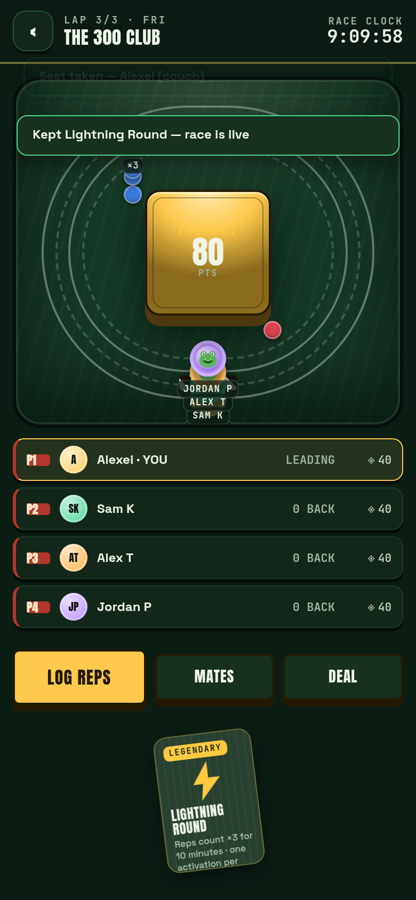
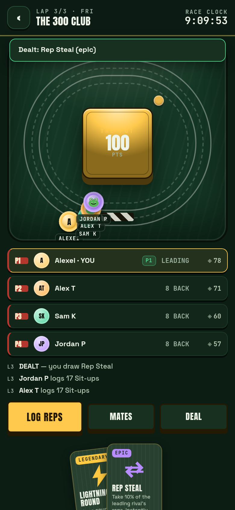
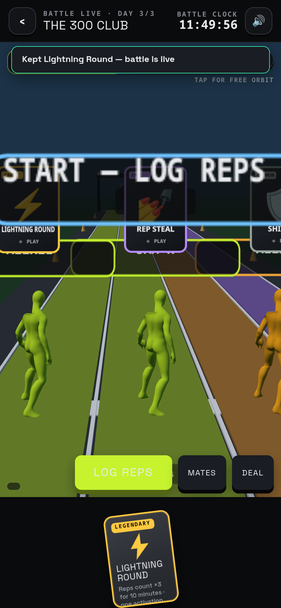
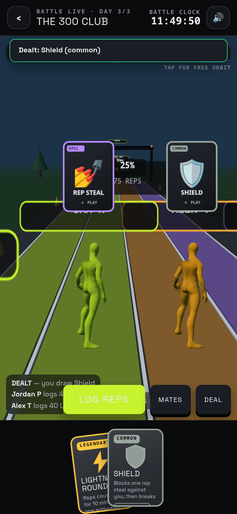
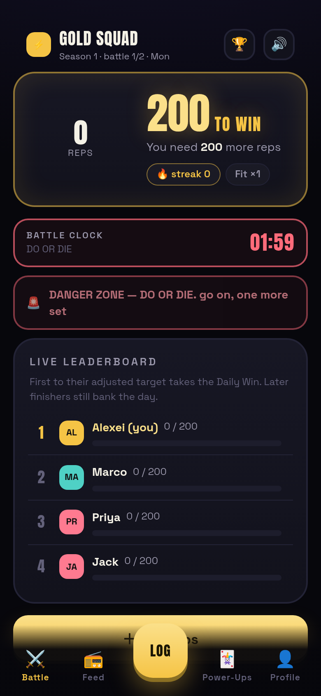
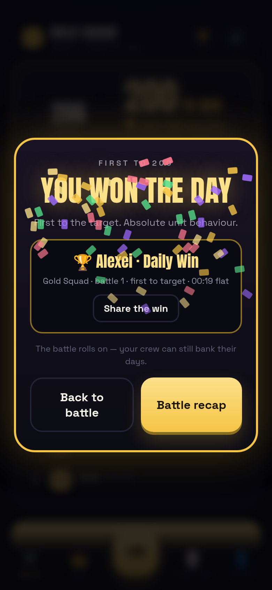
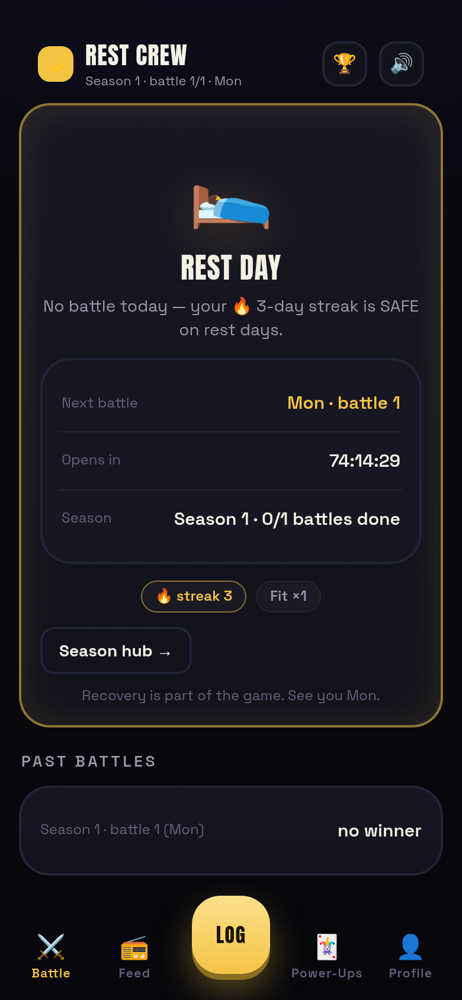

Chapter 2½ · design progression
Four working apps, each answering a different question, all preserved and runnable. Old versions are a deliverable — the progression is the design story. The engine forked at v4: v1–v3 run the 300-era engine (frozen), v4 runs Engine V4, the daily model from the master Source of Truth. Every screenshot below comes from that version's own e2e walk.
| Version | Surface | The question it answered | Rules engine | Proven by |
|---|---|---|---|---|
| v1 · Figma-faithful | /figma-app | Can Ben's design be a real, offline, phone-first app? | 300-era (frozen) | 65 screens, e2e 122 + daily 74 + squads 90 |
| v2 · Board | /v2 | What does the track-and-field board-game direction feel like? | 300-era + power-ups v2 | e2e 56 · geom 27 · 13 theme languages |
| v3 · 3D course | /v3 | Does a 3D battle course present the same game better? | 300-era | e2e 69 · geom 35 · 13 SFX wired |
| v4 · The SOT app | /v4 | Does the master Source of Truth work as a product? | Engine V4 — daily model | e2e 120 + states 59, zero console errors |
Ben's complete Figma file rebuilt as a navigable offline PWA — every screen from the design exists as a real page, and the battle screens run the real 300-era engine (state in localStorage, hash routes named after Figma frames, installable, service-worker offline).

What it proved. The design was implementable screen-for-screen; the engine (a 1:1 JS port of game-core) worked on a phone with no build step; the daily danger-zone arc (calm → DZ1 → DZ2 → DZ3 → close → recap) landed as an e2e with time travel; squads, wagers and the waiting-room → battle → result loop all held. It became the reference build: every later version diffed against it.
Where the 300-era rules still live: first-to-raw-target closes the match, highest adjusted wins, +15 closure bonus, comeback ×1.2, 4-week 3/2/1 seasons, shield-blocks-steal — the legacy section of Game Rules keeps the full spec.
The track-and-field board-game direction: a felt table with lane tracks and runner tokens, chip stacks for the pot, and power-ups as physical CSS-3D cards — dealt, flipped, played and burned on expiry — with race commentary and a lap counter.


What it proved. The board metaphor carries (founder directive: style only, no poker language — the chips are "the pot"). The card presentation invented here — deal/flip/play/burn — survived into v4's loot-style stack. And this wave produced the power-up economy answer: draft-from-3 with a catch-up curve (100% behind → 13% legendary vs 5%), reroll-to-pot, expiry, and the points trial currency. Eight full theme languages shipped with it (13 total in /styles).
The same game as a three.js battle course: Soldier-mocap runners on tier lanes positioned at their real progress %, floating power-up card billboards, a 3D charity-pot trophy pedestal and a podium finish.


What it proved. 3D presentation is affordable (1.2–1.4ms frames, geometry-verified lanes) and the spectacle direction works — but the reduced-motion snap bug fixed here taught the constraint that governs everything since: motion must be an enhancement, never a dependency. This wave also wired the 13-sound WebAudio SFX layer (log-combo pitch climb verified) that v4 inherits.
Ben's 36-page master spec (v2026-09-02) as a working product on Engine V4: daily-200 first-to-target battles with bank-day continuation, the 5-tab nav (Battle / Feed / central Log / Power-Ups / Profile), gold-on-black loot presentation, and the full season + stakes lifecycle.



What it proves. That the SOT works as software: the create-group wizard (24 spec steps condensed to 11 honest ones), the join flow with stake agreement, handicap-adjusted quick/keypad/timed logging, the corrected power-up canon live (steal = pure gain, shield = streak save, bombs that fizzle), the winners family with canvas share cards, weekly seasons with all four stakes resolving (charity chooser with the disclosed fee), feed reactions, tone-aware copy, and the RUF-internal/reps-UI ruling enforced by test.
The critical states (the SOT's "designed states" inventory — offline/reconnecting, sync conflict, duplicate warning, rest-day home, battle-complete-season-live) are built as real states with their own e2e walk: see App Screens → v4 critical states.
v2's CSS-3D deal/flip/play/burn → v4's hidden loot stack (face-down until tapped). The metaphor survived three engines.
v1's daily arc (verified with time travel) → v4's urgency ladder on the shared engine's deadline authority.
v3's 13 WebAudio sounds (mute persisted, reduced-motion safe) → v4 unchanged.
×1.5 / ×1.25 / ×1.0 / ×0.85 — unchanged since v1; only what they multiply into changed (score → target progress).
Marco / Priya / Jack seeded every version's e2e since v1 — the same crew, four engines.
Charity direction from v1's pledge ledger → v4's full contribute/resolve/donate/receipt lifecycle.